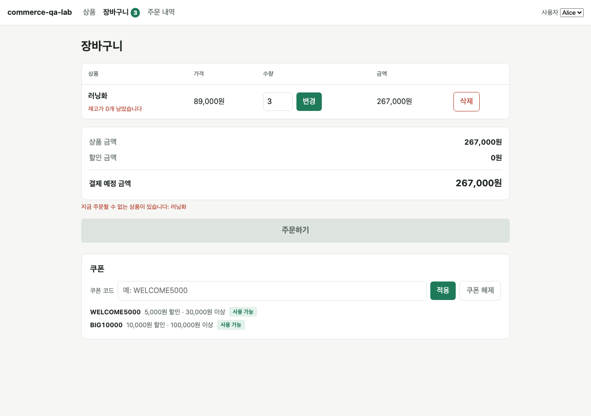

Phase 5로 넘어가기 전에 지금까지 만든 것을 전부 점검했습니다. 기능은 튼튼했지만, 검사 자체에 큰 구멍이 있었습니다.
서버 로직, 검사 품질, 화면, 문서를 각각 따로 점검한 뒤, 지적된 내용은 전부 직접 재현해서 사실인지 확인했습니다. 재현되지 않은 지적은 반영하지 않았습니다.
검사가 제 역할을 하는지 알아보는 방법은 하나뿐입니다. 코드를 일부러 망가뜨리고, 검사가 실패하는지 보는 것입니다. 이걸 변이 테스트(Mutation Testing)라고 합니다. 결과는 아래와 같았습니다.
| 일부러 넣은 버그 | 손님에게 생길 일 | 점검 전 | 보강 후 |
|---|---|---|---|
| 주문 시 첫 상품의 재고만 줄임 | 2개 이상 주문하면 나머지가 공짜로 빠져나감 | 통과(못 잡음) | 3개 실패 |
| 취소 시 첫 상품 재고만 복구 | 재고가 영구 증발 | 통과 | 2개 실패 |
| 주문 항목을 하나만 저장 | 돈은 다 받고 물건은 하나만 기록 | 통과 | 2개 실패 |
| 장바구니 수량을 합산하지 않음 | 재고보다 많이 담기 가능 | 통과 | 4개 실패 |
| 수량 변경 시 재고 확인 제거 | 재고 5개를 999개로 변경 가능 | 통과 | 3개 실패 |
| 손님 확인 없이 전부 첫 손님으로 처리 | 아무나 남의 주문을 취소 가능 | 통과 | 8개 실패 |
| 모든 에러를 같은 코드로 응답 | 이유를 구분할 수 없음 | 통과 | 16개 실패 |
| 다른 손님의 같은 쿠폰까지 사용 처리 | 남의 쿠폰이 사라짐 | 통과 | 2개 실패 |
| 주문·취소의 묶음 처리 해제 | 중간 실패 시 유령 상태 | 통과 | 각각 실패 |
왜 이런 일이 생겼나: 두 가지 이유였습니다. 첫째, 상품을 2개 이상 담아 주문에 성공하는 검사가 하나도 없었습니다. 그래서 "상품마다 반복하는" 부분이 첫 번째만 확인됐습니다. 둘째, 대부분의 검사가 부품을 직접 불러서 확인했기 때문에 손님 확인과 에러 전달처럼 "서버 주소를 통해서만" 드러나는 부분이 비어 있었습니다.
합산, 경계값, 품절·판매중지, 삭제, 손님 간 분리까지 15가지를 따로 확인합니다.
두 상품의 재고가 각각 줄고, 취소하면 각각 복구되는지 확인합니다.
손님 확인이 없으면 거절되는지, 각 실패 이유가 약속된 코드로 전달되는지 실제 요청으로 확인합니다.
주문·취소 도중 저장이 실패하도록 일부러 방해 장치를 걸고, 재고와 쿠폰이 원래대로 남는지 확인합니다.
내가 쿠폰을 써도 다른 손님의 같은 쿠폰은 그대로인지 확인합니다.
"취소 시각이 있기만 하면 통과"하던 검사를 형식과 순서까지 확인하도록 바꿨습니다.
| 문제 | 고친 내용 |
|---|---|
| 요청 본문이 너무 크면 서버 잘못(500)으로 응답 | 손님 요청 문제로 구분해 응답. 손님 실수가 서버 장애로 기록되지 않습니다 |
| 품절된 상품의 장바구니 수량을 줄이는 것조차 거절 | 줄이기는 항상 허용. 늘릴 때만 재고를 확인합니다 |
| 주문 불가 상태인데 금액 미리보기는 정상 응답 | 주문 가능 여부와 막힌 상품을 함께 알려 줍니다 |
| 주소 오타 시 영어 HTML 오류 화면 | 모든 주소가 같은 형식으로 이유를 돌려줍니다 |
| 주문에 저장된 쿠폰 코드가 나중에 바뀜 | 상품 이름·가격처럼 주문 시점 값을 저장합니다 |
| 문제 | 고친 내용 |
|---|---|
| 인터넷이 끊긴 채 주문하면 주문 버튼이 영영 눌리지 않음 | 실패해도 버튼이 다시 살아납니다. 안내도 한국어로 나옵니다 |
| 실패 메시지가 다른 동작의 성공 메시지에 덮임 | 한 번에 하나의 동작만 처리하고, 동작을 시작할 때 이전 메시지를 지웁니다 |
| 장바구니 개수가 서버와 어긋남 | 응답이 엇갈려 도착하면 최신 요청 결과만 반영합니다 |
| 쿠폰 입력칸에 적용되지 않은 코드가 남음 | 서버가 알려 준 실제 적용 상태로 맞춥니다. "쿠폰 해제" 버튼도 추가했습니다 |
| 담기·취소 버튼 연타로 중복 요청 | 요청이 끝날 때까지 다시 눌리지 않습니다 |
| 주문 날짜가 컴퓨터 시간대에 따라 달라짐 | 고정 형식으로 표시해 검사가 흔들리지 않게 했습니다 |

검사 로봇은 화면 요소를 사람이 읽는 이름으로 찾습니다. 그런데 이름이 겹치면 어느 것을 가리키는지 알 수 없어 검사가 멈춥니다. 실제로 확인해 보니 문제가 있었습니다.
| 확인한 것 | 점검 전 | 보완 후 |
|---|---|---|
| 상품 목록에서 "수량" 입력칸 찾기 | 3개가 동시에 잡힘 | "머그컵 수량"으로 정확히 1개 |
| 메뉴에서 "장바구니" 링크 찾기 | 이름에 개수 숫자가 섞여 0개 | 정확히 1개 |
| 주문이 2건일 때 금액 찾기 | 검사가 즉시 오류 | "주문 #1" 카드 범위로 좁혀 1개 |
목록 안의 요소는 카드나 행으로 범위를 좁힌 다음 찾는 것이 원칙입니다. 이 원칙을 작업 규칙 문서에도 적어 두었습니다.
일부러 넣은 버그를 지우려고 "마지막 저장 시점으로 되돌리기"를 썼는데, 아직 저장하지 않은 그날의 수정까지 함께 지워졌습니다. 파일 세 개의 수정이 사라졌고, 그 상태로 측정한 결과 일부가 틀렸습니다.
어떻게 알았나: 검사 1개가 이유 없이 실패해서 추적하다 발견했습니다. 수정을 다시 적용하고, 이번에는 파일을 따로 복사해 두고 복사본으로 되돌리는 방식으로 전부 다시 측정했습니다.
남은 교훈: 실험을 하기 전에는 되돌릴 방법을 먼저 준비해야 합니다. 그리고 "왜 이게 실패하지?"를 그냥 넘기지 않은 것이 문제를 찾아냈습니다.
지적받은 것 중 "점검 도중 서버가 두 번 죽었다"는 항목은 같은 요청을 반복해도 재현되지 않았습니다. 서버는 잘못된 요청을 받은 뒤에도 정상 동작했습니다. 재현되지 않은 내용은 고치지 않고 이렇게 기록만 남깁니다.
브라우저 확인 숫자는 임시 스크립트 실행 결과이며, 그 스크립트는 저장소에 포함되어 있지 않습니다. Phase 5~6에서 정식 자동 검사로 옮기면 누구나 직접 실행해 확인할 수 있게 됩니다.